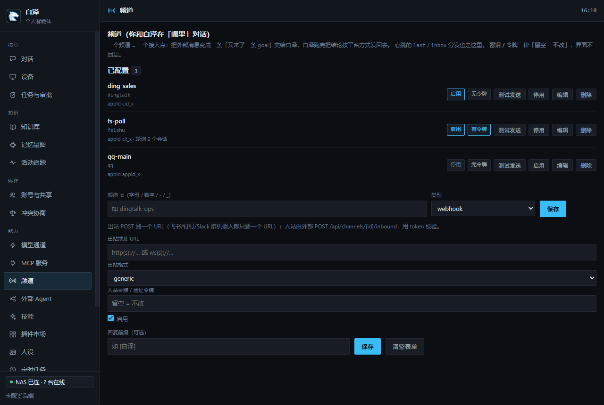

白泽跑在你自己的 NAS 上——模型路由、长期记忆、技能与审批都在这里。
Windows 桌面端与 Android 手机端注册成设备当手脚，接收指令、自动流转，数据正本全在后端。

根据你的环境选择合适的安装方式——后端 NAS Docker 起大脑，Windows / Android 装手脚。
# 1. 在仓库根建 deploy.local.env（模板见 deploy.local.env.example） # 填 NAS 地址 / 用户名 / 密码 / 配对令牌 # 2. 一条命令：构建 → 上传 → NAS 打镜像 → 起容器 → 健康检查 powershell -ExecutionPolicy Bypass -File tools\deploy-nas.ps1 # 后端启动后默认监听 http://<NAS>:8787 # 首次启动自动建 admin 账号，口令写 <数据>/admin-password.txt
# 1. 构建（纯 ASCII 脚本，无 cgo / 无 Rust） powershell -ExecutionPolicy Bypass -File desktop\build.ps1 # 2. 首次运行，指定后端地址和配对令牌 desktop\bin\baize-desktop.exe --server http://<NAS>:8787 --token <令牌> # 之后直接双击 exe（配置保存在 %APPDATA%\白泽\desktop.json） # 3. 要打安装包 powershell -ExecutionPolicy Bypass -File desktop\build-installer.ps1 # → bin\baize-desktop-setup-0.9.0.exe
# 两步合一：先交叉编译 Go 内核（arm64），再打 APK powershell -ExecutionPolicy Bypass -File android-app\build.ps1 # 产物：android-app\bz-todo-v0.9.0.apk # 安装到设备（用 adb） adb connect <手机IP>:5555 adb install -r android-app\bz-todo-v0.9.0.apk # ⚠️ 三星等激进 ROM：系统设置里手动允许「自启动」
# 从 GitHub Releases 下载对应平台的独立 zip # 所有产物均为静态编译，解压即用，无需安装 # 后端（Linux amd64 / arm64 / 含 Dockerfile） gh release download v0.9.0 -p "baize-backend-*.zip" -D ./downloads/ # 桌面端（Windows amd64） gh release download v0.9.0 -p "baize-desktop-*.zip" -D ./downloads/ # 手机端（Android arm64 APK） gh release download v0.9.0 -p "bz-todo-*.apk" -D ./downloads/ # 校验 SHA256 Get-FileHash .\downloads\baize-backend-linux-amd64.zip -Algorithm SHA256
白泽跑在你自己的 NAS 上，数据不出内网；端侧只留缓存，危险动作强制人工审批。
后端只跑在你自己的 NAS 上，数据正本全在内网。密码明文只驻设备内存，绝不送云端模型。
NAS 后端统一编排，任务自动路由到具备能力的设备——手机布置需要电脑能力会自动转派桌面。
删除 / 提权 / 发消息 / 改权限——危险动作强制人工确认，支持「本次放行 / 永远放行」记忆。
六个频道类型，Webhook 出站、QQ / 飞书 / 钉钉 / 元宝 / 微信入站。
白泽的后端是设备中枢——每个端注册时上报能力清单，后端拿到任务先问"谁能做"，然后派过去。结果统一落记忆、通知你。
图谱 + 向量 + 关键词 + 时效性四路混合检索，笔记星图把双向链接和语义自动连边画成一张网。技能 / MCP 插件热插拔，内置官方源离线可用。
所有智能体逻辑都跑在 NAS 上——Agent 编排、长期记忆、模型路由、审批闸门、定时任务、插件市场。数据正本全在后端，端侧只留缓存。
Go + 纯 Go WebView2（无 cgo / 无 Rust），单文件约 8 MB。CLI / CMD / 管理员 CMD 三形态执行，悬浮球 + 托盘常驻，支持自动更新。
Go 内核静态库 + Java 前台服务常驻。ADB + 无障碍双通道并行，UI 自动化 Copilot 风格操作任意 App，待办 + 密码本双 Tab。